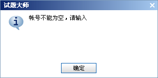

Ø 主题与编号
主题：您可以在这里设置当前试题的主题，它将显示在所生成试题的顶部。新建的试题默认值为“未命名”。
编号：您可以设置试当前试题的编号，在数据收集系统中以方便统计。
Ø 试题简介
显示简介页面：此选项控制下面的简介、图片及考生信息等，在生成的试题中，是否显示。
简介：你可以在这里设置当前试题的简介信息，它可以是对试题的一个简单说明，或者是一个介绍。
图片：您可以为当前试题加入一个图片，它会显示在生成试题的信息页面中。
测试者信息设置：这里可以设置是否显示考生账号、邮件信息，以及是否允许空账号。

与此选项对应的试题设置效果，如下图所示：

其右下角的[记住我]选项，如cookies一样。若试题发布到网上，用http://方法访问，则它始终起作用；如果在本机浏览，则它与试题在电脑中的位置有关，它只会记录在一个位置的信息，如果您把试题移到另一个位置，它不会再起作用。